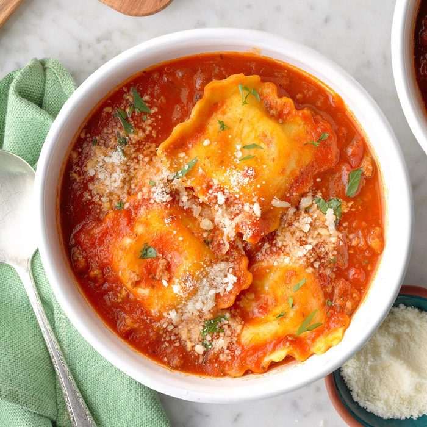

Ravioli

Ingredient
- 2 cups of water
- 1 cube chicken buillon
- 1 pound prepared freshed cheese ravioli
- 2/3 cup baby spinach leaves
- 2 fresh mushroom
- 1/4 cut sliced carrot
- 1/2 cup frozen mixed peas and carrots
- 1 tablespoon olive oil
- 1 dash soy sauce
- salt and black pepper to taste
Instruction
- In a large saucepan, bring water and bouillon cube to a boil.
- Place ravioli in the pot, and cook 5 minutes, stirring occasionally.
- Mix in spinach, mushrooms, carrot, frozen peas and carrots, olive oil, and soy sauce
- Cook for 5 minutes until vegetables are tender
- Season with salt and pepper
Main Menu